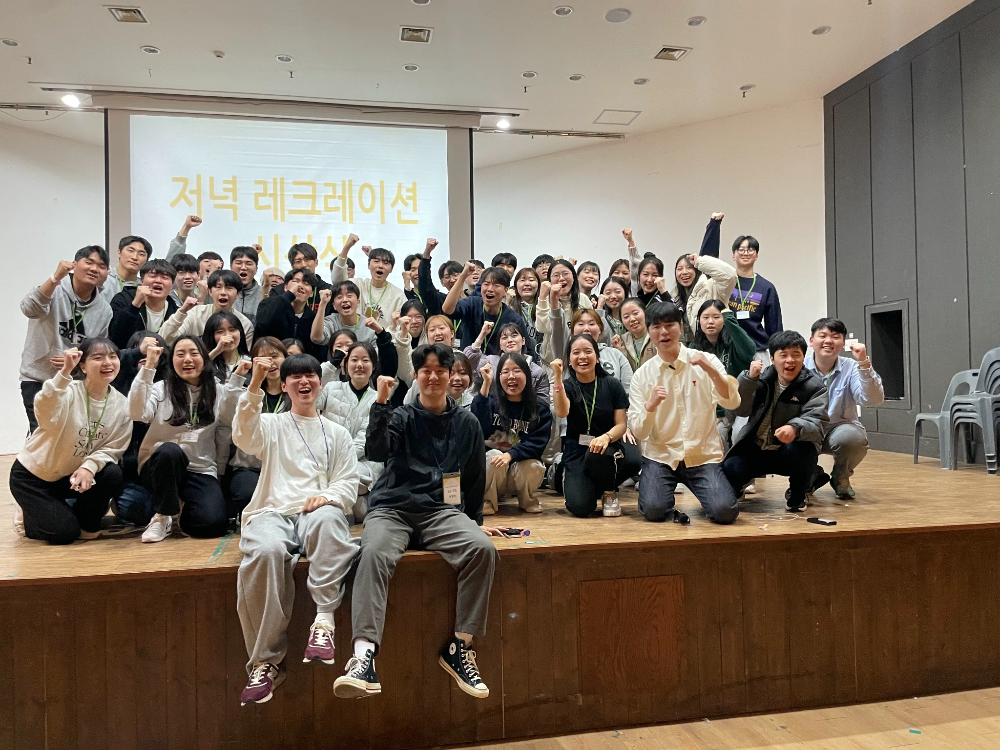

Leadership and Community
My leadership experience as president of the student council taught me how to organize a group, communicate with diverse members, and build a collaborative team environment.
Coordinating activities and listening to different perspectives strengthened the people-centered leadership skills that I bring to team-based research. In the group photo, I am seated in the front row in white.
